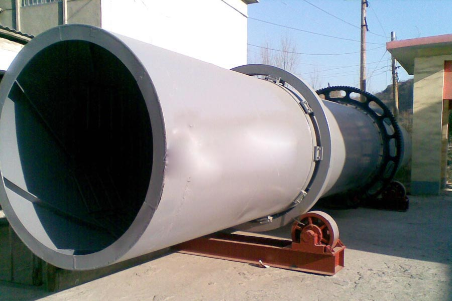

Construction waste crushing production line

Mobile construction waste crushing station for urban construction waste crushing.
rotary tube drying machine
rotary tube drying machine. Sand dryer, river sand dryer, sand dryer, sand dryer, sand dryer is one CAG production of industrial dryer equipment, also known as sand dryer sand dryer , sand dryer, quartz sand dryer, a large number of materials processing drying equipment.
Sand dryer, drying equipment manufacturers, the dryer is widely used in building materials, metallurgy manufactured sand beneficiation chemical and cement industries, mainly for sand \ sand \ limestone \ quartz sand \ big wet clay, etc., than the major's materials and certain humidity range.

We manufacture and provide Sand Drying Equipment – sand dryer with rigid construction body with interchangeable tyre wheels. Inner and outer chamber having screw flights to mention the sand. Burner chamber having standard burner. Blower and oil unit. The drying chamber of sand dryer rotating by either gear or friction drive rollers and connected by standard gear box with motor. Sand charging by scooping unit 100% sand drying performance getting from your equipment.
Kenya sand drying equipment price. Also known as sand dryer sand dryer is mainly used for drying certain humidity range of particulate material, such as dry mortar industry with sand, sand casting industry for a variety of specifications. Blast furnace slag cement building materials industry with.
TDJ number of sand dryers are specially designed for sand drying. Has the dedicated structures not just for that dryer itself, but in addition for it?¡¥s equipped machines to prevent the sand being stuck to inside walls of the machines and regaining moisture after drying. Dryer is wrapped a layer of insulating course to reduce heat loss. Significant Top features of the Palmer Sandmaster Dries effectively at high temperatures – never buy bagged sand again Screens better – eliminating oversized sand particles Sanitizes – eliminating most disease pathogens and weed seeds Dry just the sand that you might want ¡§C eliminate buying extra sand.
CAG production of mineral processing equipment mill, energy-saving ball mill, dryer, crusher, rotary kiln, magnetic separator, flotation machine, aluminum gray ball, slime dryer, sand dryer, sand dryer, lime kiln, ceramic sand kiln
Kenya sand drying equipment manufacturer. A full sand dryer low equipment prices, energy efficient, CAG production of new sand dryer has a high capacity, low fuel consumption, low drying cost, high temperature and other characteristics. Commonly used in dry sand, sand, slag, cinders, quartz sand and other materials.
Leave Me A Message, Now
If you have any questions regarding equipment prices, production line configuration or other problems, you can send a message to us, we will contact you soon.